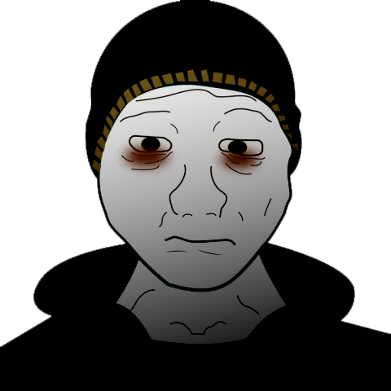
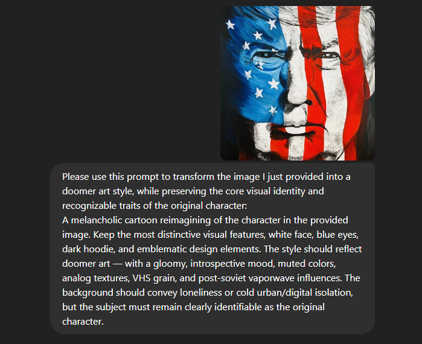
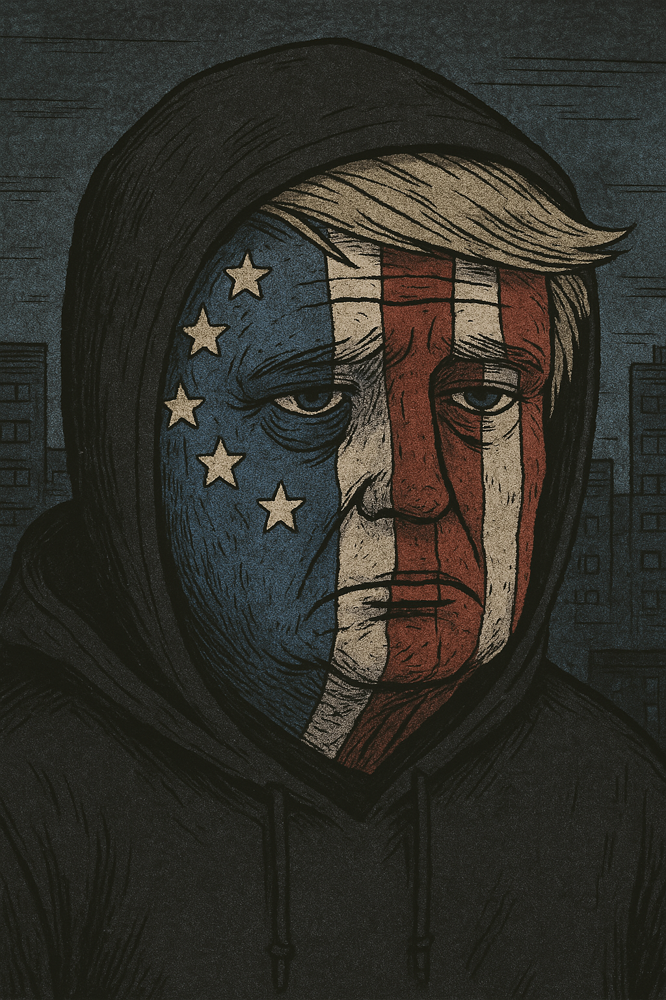
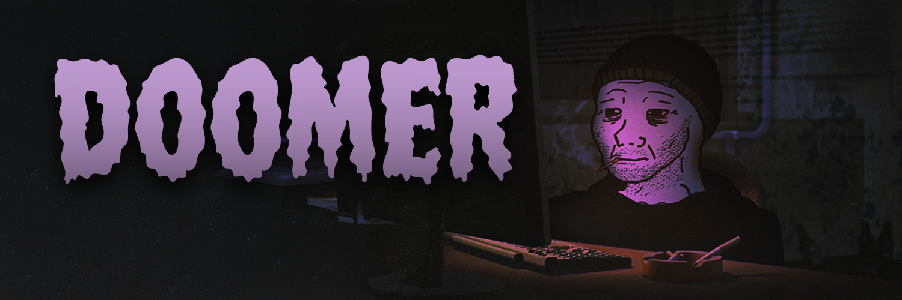

DOOMER

You made it here, somehow. This is a place for those who see the cracks in the system, who feel the weight of existing in a world that seems to be falling apart piece by piece. Here, you're not alone in your silence. We don’t offer hope just understanding..
Sit down. Light a cigarette. The end isn’t near... but it sure feels like it.
Total Supply
1 BILLION
Contract Address
4o7A85uVs6uE3ZvPKwZtcC3ZJ7y5NUJc7HuH6QWbpump
ROADMAP
1. decent launch
2. form a doomer community
3. recover hope
4. end isn't here

WHAT'S A DOOMER?
A doomer is a person who feels very negative or hopeless about the future. They often believe that big problems in the world, like economic collapse, memecoin rugs and jeets.
Because of this, doomers may feel depressed, anxious, or like there's no point in trying to fix anything.
SADNOMICS
1,000,000,000 SUPPLY


VIEW CHART

JOIN $DOOMER COMMUNITY
Step 1: Upload the image do you want to Doomerfy
Step 2: Use the prompt below
Please use this prompt to transform the image I just provided into a doomer art style, while preserving the core visual identity and recognizable traits of the original character: A melancholic cartoon reimagining of the character in the provided image. Keep the most distinctive visual features, white face, blue eyes, dark hoodie, and emblematic design elements. The style should reflect doomer art — with a gloomy, introspective mood, muted colors, analog textures, VHS grain, and post-soviet vaporwave influences. The background should convey loneliness or cold urban/digital isolation, but the subject must remain clearly identifiable as the original character.

Step 3: Post your $DOOMER in the community

